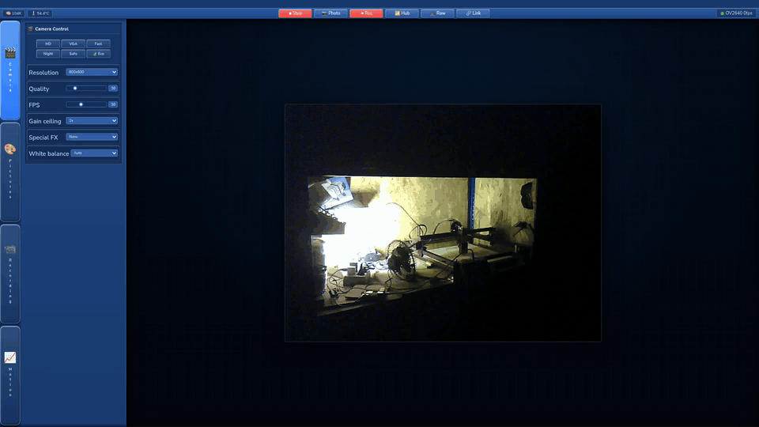

What it does
- MJPEG stream — up to two viewers at once, zero-copy from the PSRAM frame cache.
- Snapshots — one tap writes a JPEG to
/CAM/PHOTOS/. - AVI recording — background writer, adaptive SD flush, dated folders, staged until NTP sets the clock.
- Motion detection — grayscale difference on a 40×30 grid, with sensitivity, confirm time, cooldown and a region of interest; the action is record or photo.
- Timelapse and DashCam — periodic capture into a 10 fps AVI, or loop rotation every N minutes.
- Boot mode — off, photo, video, motion or timelapse, chosen and remembered.
Install
- Flash
firmware.binover USB — an existing unit can take it at/otainstead. - Join the
NODE32-HUBaccess point (password12345678) and open192.168.4.1. - Set your Wi-Fi; the device answers at
http://cam-m.localfrom then on. - On the camera page pick resolution and FPS, then point the motion grid at the area that matters.
Hardware
- Board — ESP32-S3 N16R8 (8 MB PSRAM, required for the frame buffers).
- Sensor — OV2640, OV3660 or OV5640 on the DVP bus.
- Storage — microSD for video and photos; PSRAM serves the live stream.
- Optional — SSD1306 OLED for a local status line.
